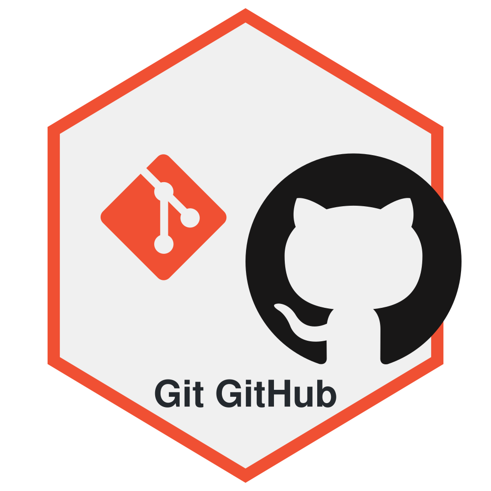

Controle de Versão com Git e GitHub
Um tutorial básico sobre o uso do sistema de controle de versão Git e sobre o GitHub.
Prof. Dr. Washington S. da Silva
7 junho 2024

1 Introdução
Este tutorial é destinado aos estudantes do bacharelado em Administração e aos mestrandos do Mestrado Profissional em Administração do IFMG - Campus Formiga.
Também é útil para administradores, economistas, contabilistas, auditores e outros profissionais que desejam utilizar ferramentas modernas para criar relatórios e outros produtos de forma reproduzível e auditável.
Você não precisa ser programador para aproveitar este material. O tutorial foi elaborado pensando em profissionais de negócios que desejam melhorar seu fluxo de trabalho com documentos, análises e projetos.
Imagine o Git como um “sistema de salvamento inteligente” que registra cada versão dos seus documentos e projetos.
Ao contrário do método tradicional de salvar vários arquivos como “Relatório_v1.docx”, “Relatório_v2.docx”, o Git guarda apenas as mudanças, economizando espaço.
É como uma “máquina do tempo” para seu trabalho: você pode visualizar ou restaurar qualquer versão anterior quando precisar, sem perder as versões mais recentes.
Facilita o trabalho em equipe, permitindo que várias pessoas alterem os mesmos arquivos sem conflitos graves.
Evita a confusão de múltiplas versões: Adeus a arquivos como
“Relatorio_Final_v2_Revisado_Corrigido.docx”.Recuperação de trabalho: Se algo der errado, você pode voltar facilmente a uma versão anterior que funcionava.
Experimente sem medo: Tente novas abordagens sabendo que pode reverter se não gostar do resultado.
Trabalho colaborativo organizado: Múltiplas pessoas podem trabalhar no mesmo projeto sem sobrescrever o trabalho umas das outras.
Documentação automática: O histórico de alterações serve como documentação da evolução do seu trabalho.
Um serviço online que funciona como uma “nuvem para projetos Git”.
Pense no GitHub como um Google Drive ou Dropbox especializado para projetos que usam Git.
Além de armazenar seus arquivos, oferece ferramentas para colaboração, revisão e discussão do trabalho.
É amplamente usado tanto por desenvolvedores quanto por pesquisadores, analistas e educadores para compartilhar trabalhos.
Backup seguro: Seus projetos ficam armazenados na nuvem, protegidos contra perda de dados se seu computador falhar ou for perdido.
Portfólio profissional: Muitos profissionais usam o GitHub como vitrine de seus trabalhos e habilidades.
Colaboração simplificada: Facilita o trabalho em equipe mesmo com pessoas em locais diferentes.
Compartilhamento eficiente: Compartilhe seu trabalho com colegas de curso, de trabalho ou com o mundo.
Aprendizado constante: Acesse e estude projetos semelhantes ao seu para aprender novas técnicas e abordagens.
2 Instalação e Configuração Básica
2.1 Instando Git no Windows
- Baixe o instalador:
Acesse o site oficial: https://git-scm.com/download/win
O site deve te indicar automaticamente qual a versão adequada para seu sistema operacional.
- Execute o instalador:
- Clique duplo no arquivo baixado (algo como “Git-2.xx.x-64-bit.exe`”).
- Aceite as permissões de administrador se solicitado.
- Configure o instalador:
Mantenha as opções padrão na maioria das telas;
Na tela “Adjusting your PATH environment”, escolha a opção recomendada: “Git from the command line and also from 3rd-party software”
Para as demais opções, as configurações padrão funcionam bem para iniciantes
- Conclua a instalação:
Clique em “Install” e aguarde a conclusão
Ao finalizar, marque a opção “Launch Git Bash” e clique em “Finish” para abrir o Git Bash imediatamente
- Verifique a instalação:
No Git Bash que abriu, digite:
git --versionSe aparecer algo como
git version 2.xx.x, a instalação foi bem-sucedida!
O Git Bash é um terminal especial (uma janela de linha de comando) instalado junto com o Git no Windows.
Pense nele como uma “janela de comando” onde você digita instruções para o Git.
Por que usar o Git Bash em vez do Prompt de Comando do Windows?
Oferece comandos adicionais úteis que não existem no prompt padrão do Windows.
Funciona de forma mais semelhante ao Git em outros sistemas (Mac, Linux).
Possui recursos de autocompletar e visualização colorida que facilitam o us.o
Como abrir o Git Bash:
- Método 1: Pesquise “Git Bash” no menu Iniciar.
- Método 2: Clique com o botão direito em qualquer pasta e selecione “Git Bash Here” para abrir o terminal já naquela pasta.
Não se assuste com a interface de texto!
- Apesar de parecer complicado no início, você precisará aprender apenas alguns comandos básicos para começar.
2.2 Configuração do Git no seu Computador
Antes de começar a usar o Git, é necessário fazer uma configuração inicial básica. Essa configuração identifica quem está fazendo as alterações e só precisa ser feita uma vez em cada computador.
- Configure seu nome de usuário:
Abra o Git Bash
Digite o comando:
- Exemplo:
- Configure seu email:
- Use o mesmo email que você usará (ou já usa) para sua conta no GitHub:
- Exemplo:
- Verifique suas configurações:
- Para conferir se tudo está correto:
- Isso mostrará todas as suas configurações globais
Estas informações serão usadas para identificar suas contribuições em projetos, então use dados reais, especialmente se for trabalhar em projetos compartilhados.
2.3 Criando Conta no GitHub
O GitHub é onde você vai armazenar seus projetos Git na nuvem. Criar uma conta é gratuito e simples:
- Acesse o site do GitHub:
Acesse https://github.com
Clique no botão “Sign up” (Cadastrar-se)
- Preencha o formulário de cadastro:
Digite seu email (use o mesmo que configurou no Git local).
Crie uma senha segura.
Escolha um nome de usuário único:
- Este será parte do endereço dos seus projetos (github.com/seu-usuario).
- Recomendação: use algo profissional que você não se importaria de mostrar no currículo.
- Verifique seu email:
O GitHub enviará um código de verificação para seu email.
Insira este código para confirmar sua conta.
- Personalize sua experiência (opcional):
O GitHub perguntará sobre seu nível de experiência e interesses.
Você pode preencher ou pular esta etapa.
- Configure a autenticação em dois fatores (recomendado):
Para maior segurança, ative a autenticação em dois fatores nas configurações.
Isso protege sua conta mesmo se alguém descobrir sua senha.
- Crie seu primeiro repositório:
Após entrar, clique no botão “+” no canto superior direito.
Selecione “New repository” (Novo repositório).
Dê um nome ao repositório (por exemplo, “meu-primeiro-projeto”).
Clique em “Create repository” (Criar repositório).
Pronto! Sua conta está criada e você já tem seu primeiro repositório no GitHub.
2.4 Configurando o RStudio para usar o Git Bash como Terminal
Como trabalharemos com o sistema Quarto e RStudio, é importante saber como acessar e usar o terminal Git Bash diretamente dentro do RStudio:
- Configurando o terminal Git Bash no RStudio:
Abra o RStudio
Vá para “Tools” > “Global Options” > “Terminal”.
No campo “New terminals open with:”, selecione “Git Bash” no menu suspenso.
Clique em “Apply” e depois em “OK”
- Acessando o terminal Git Bash no RStudio:
No painel inferior do RStudio, clique na aba “Terminal”.
Um novo terminal Git Bash será aberto.
Se um terminal já estiver aberto, mas não for o Git Bash, clique no ícone “+” no canto superior direito do painel de terminal e selecione “New Terminal” para abrir um novo terminal Git Bash
- Vantagens de usar o Git Bash dentro do RStudio:
Mantém seu fluxo de trabalho dentro de um único ambiente.
Facilita a navegação entre edição de arquivos e execução de comandos Git.
Permite copiar e colar facilmente entre o editor e o terminal.
Evita a necessidade de alternar entre aplicativos diferentes.
- Verificando se está usando Git Bash:
O prompt do Git Bash normalmente mostra o caminho atual e termina com “$”.
As cores do texto no terminal são diferentes do terminal padrão do Windows.
Você pode digitar
echo $SHELLe pressionar Enter - se mostrar algo contendo “bash”, você está no Git Bash.
3 Comandos Essenciais para Começar
Os quatro comandos básicos que você usará com mais frequência (seu fluxo de trabalho padrão) são:
git status: consulta o estado atual dos seus arquivosgit add: prepara as mudanças para serem salvasgit commit: salva as mudanças no repositório localgit push origin main: envia as mudanças para o GitHub
Pense nestes comandos como um processo de 4 passos:
- Verificar o que mudou (
status). - Adicionar/Selecionar o que você quer salvar (
add). - Salvar as mudanças localmente com uma descrição (
commit). - Enviar para a nuvem/GitHub (
push).
3.1 git status
git status?
O comando
git statusé como tirar uma “foto” do estado atual do seu projeto.O que ele mostra?:
- Quais arquivos você modificou desde o último salvamento.
- Quais arquivos são novos e ainda não estão sendo rastreados.
- Quais mudanças já estão prontas para serem salvas (commit).
Quando usar?:
- Sempre que quiser verificar o que mudou no seu projeto.
- Antes de fazer um commit para confirmar que está incluindo as mudanças certas.
- Quando não se lembrar se salvou suas últimas alterações.
Exemplo prático: Imagine que você está trabalhando em uma análise de dados e:
- Modificou seu script principal (
analise.R). - Adicionou um novo arquivo de dados (
dados_2024.csv). - Modificou seu relatório (
relatorio.qmd).
- Modificou seu script principal (
Ao digitar
git status, você verá todos esses arquivos listados indicando quais estão prontos para commit (em verde) e quais ainda precisam ser adicionados (em vermelho).É como fazer a pergunta: “O que mudou no meu projeto e o que preciso salvar?”
3.2 git add
git add?
O comando
git addé como adicionar ou selecionar quais mudanças você quer incluir na próxima “foto” (commit) do seu projeto.Pense nele como a etapa de “seleção” antes de salvar suas mudanças definitivamente.
Como funciona na prática?
Imagine que você está organizando fotos para um álbum:
- Você tira várias fotos (faz várias mudanças nos arquivos)
- Antes de imprimir o álbum, seleciona quais fotos quer incluir (
git add) - Só depois de selecionar, você finaliza uma página do álbum (
git commit)
Quando usar? Use
git addquando:- Terminar de fazer uma alteração que faz sentido ser salva
- Quiser incluir um novo arquivo ao projeto
- Antes de fazer um commit
Exemplos de Uso:
- Para adicionar apenas um arquivo específico:
Esse comando adiciona apenas o arquivo analise.R que está na pasta “scripts”.
Se você estiver trabalhando com análises estatísticas ou financeiras, poderia ser:
- Para selecionar todos os arquivos de uma pasta:
Esse comando adiciona todos os arquivos modificados dentro da pasta “scripts”
- Para selecionar todos os arquivos modificados do projeto:
O ponto “.” significa “todos os arquivos” - use com cuidado!
Dica para iniciantes:
Comece usando o comando completo para cada arquivo até se familiarizar com o processo.
Depois, quando estiver mais confiante, você pode usar o
git add .para adicionar vários arquivos de uma vez.
3.3 git commit
git commit?
O
git commité o momento de “salvar oficialmente” as mudanças que você selecionou com ogit add.É como tirar uma foto do estado atual do seu projeto e adicionar uma legenda descrevendo o que mudou.
Cada commit cria um ponto na linha do tempo do seu projeto ao qual você pode voltar se precisar.
Como usar:
A parte -m "mensagem" é onde você explica brevemente o que mudou.
Exemplos de boas mensagens de commit:
Quando fazer um commit?
Pense em cada commit como um “marco” no seu trabalho:
Após completar uma tarefa específica: “Terminei de analisar os dados de janeiro” → commit
Após resolver um problema: “Corrigi o erro nas referências” → commit
Antes de fazer uma mudança grande ou arriscada: “Vou reorganizar toda a estrutura do documento” → commit primeiro!
Analogia: Se seu trabalho fosse uma viagem, cada commit seria como fincar uma bandeira no caminho dizendo “cheguei até aqui com segurança”. Se você se perder depois, pode sempre voltar a este ponto.
Recomendação para iniciantes: Faça commits frequentes! É melhor ter muitos pequenos commits do que poucos commits gigantes.
3.4 git push
git push?
O comando
git pushenvia as mudanças que você salvou localmente (comcommit) para o GitHub.É como sincronizar seu trabalho local com a “nuvem”, tornando-o disponível para outras pessoas ou em outros computadores.
Como funciona na prática:
Imagine que você:
- Fez várias alterações no seu computador
- Adicionou essas alterações (
git add) - Salvou-as localmente (
git commit)
Neste ponto, as mudanças estão apenas no seu computador! Para enviar ao GitHub:
O que significa “origin main”?
originé o nome padrão que o Git dá ao seu repositório remoto no GitHub (como um “apelido” para o endereço completo)mainé o nome do ramo principal do seu projeto (anteriormente chamado de “master” em projetos mais antigos)
Quando fazer um push?
- Ao terminar uma sessão de trabalho
- Quando quiser compartilhar seu progresso com colegas
- Como backup de segurança do seu trabalho
- Antes de mudar para outro computador
Analogia: Se os commits são como salvar seu jogo em um cartão de memória, o push é como fazer um backup desse cartão na nuvem. Se seu computador quebrar, você não perde o progresso.
Dica: Para ver se seu push funcionou, acesse seu repositório no GitHub pelo navegador - você deverá ver todas as mudanças que acabou de enviar.
3.5 Uso do Git via Terminal no RStudio
Todos os comandos Git que aprendemos serão executados através do terminal Git Bash dentro do RStudio:
- Abra o terminal no RStudio:
Clique na aba “Terminal” no painel inferior do RStudio.
Certifique-se de que está usando o Git Bash (o prompt deve terminar com “$”).
- Navegue até a pasta do projeto:
Se você estiver trabalhando em um Projeto RStudio, o terminal já estará aberto na pasta correta.
Caso contrário, use o comando
cdpara navegar até a pasta do seu projeto.
- Execute os comandos Git normalmente:
# Verificar o estado atual
git status
# Adicionar arquivos para o próximo commit
git add nome-do-arquivo.qmd
# Fazer um commit com mensagem
git commit -m "Adiciona análise descritiva"
# Enviar para o GitHub
git push origin mainPor que usar o terminal em vez da interface Git do RStudio?
Mais rápido e responsivo.
Menos sobrecarga visual, ajudando a focar no que realmente importa.
As mesmas habilidades são transferíveis para qualquer ambiente, não apenas RStudio.
Mensagens de erro e avisos são exibidos com mais clareza.
Fornece mais controle sobre o processo Git.
Dica para iniciantes:
Mantenha uma “cola” dos comandos Git mais comuns por perto até se familiarizar com eles. Com o tempo, você os memorizará naturalmente através do uso frequente.
4 Comandos Úteis para o Dia a Dia (Opcional)
Após se sentir familiarizado e confortável com os 4 comandos essenciais explicandos na Seção 3, vale a pena conhecer e testar outros comandos úteis para o dia a dia, como os comandos git fetch, git diff e git restore.
4.1 git fetch
git fetch?
O comando
git fetchbaixa as mudanças do repositório remoto (GitHub) para seu computador, mas não aplica essas mudanças automaticamente aos seus arquivos.É diferente do
git pull, que baixa E aplica as mudanças imediatamente.Quando usar?:
- Quando quiser verificar se há mudanças no GitHub antes de aplicá-las
- Para colaboração segura: ver o que seu orientador mudou antes de mesclar
- Quando quiser evitar conflitos inesperados
Como funciona na prática:
- Verificar se há mudanças no GitHub:
- Ver se existem mudanças para baixar:
Se houver mudanças, você verá algo como:
Your branch is behind 'origin/main' by 2 commits- Ver quais mudanças foram feitas (opcional):
Isso mostra os commits que estão no GitHub mas ainda não no seu computador.
- Aplicar as mudanças quando estiver pronto:
Ou simplesmente:
Analogia: Se git pull é como pedir uma pizza e já começar a comer, git fetch é como pedir a pizza, ela chegar, mas você primeiro olhar o que veio antes de decidir se quer comer.
Vantagem para colaboração: Com git fetch, você pode ver exatamente o que seu orientador mudou antes de aplicar as alterações, evitando surpresas e conflitos inesperados.
Exemplo prático:
4.2 git diff
git diff?
O comando
git diffmostra as alterações específicas que foram feitas nos arquivos, mas que ainda não foram preparadas para commit (não passaram pelogit add).É como um “modo de revisão” que destaca exatamente o que foi adicionado (em verde) e o que foi removido (em vermelho).
Quando usar?:
- Antes de adicionar arquivos com
git add, para revisar exatamente o que foi alterado. - Para verificar detalhes das modificações que o
git statusapenas lista. - Quando você não se lembra exatamente o que mudou em um arquivo específico.
- Antes de adicionar arquivos com
Exemplos de Uso:
- Para ver todas as mudanças não preparadas:
- Para ver as mudanças em um arquivo específico:
- Para ver as mudanças que já foram preparadas com
git add(e irão para o próximo commit):
Analogia: Se o
git statusé como uma lista de compras que mostra quais itens você precisa, ogit diffé como abrir cada item para inspecionar seu conteúdo antes de colocá-lo no carrinho.Como interpretar o resultado:
- Linhas que começam com
+mostram conteúdo adicionado - Linhas que começam com
-mostram conteúdo removido - O contexto (linhas não alteradas) aparece sem símbolos especiais
- Linhas que começam com
Dica para iniciantes:
Use o git diff antes de cada git add para ter certeza de que está adicionando apenas as alterações desejadas, especialmente quando trabalha com documentos importantes como relatórios financeiros, análises de dados ou capítulos de dissertação.
4.3 git restore
git restore?
O comando
git restoreé usado para desfazer mudanças em arquivos, funcionando como um “ctrl+z” mais poderoso e específico.É um comando moderno (introduzido no Git 2.23) que substitui alguns usos do antigo
git checkout, sendo mais claro e intuitivo.Quando usar?:
- Quando você fez alterações em um arquivo mas quer descartar essas mudanças.
- Para remover arquivos da área de preparação (staging area) sem perder as alterações.
- Quando quer voltar um arquivo ao estado do último commit.
Principais casos de uso:
1. Descartar mudanças não salvas em um arquivo:
Este comando descarta todas as alterações feitas no arquivo relatorio.qmd desde o último commit, voltando-o ao estado anterior.
2. Remover arquivo da área de preparação (unstage):
Se você usou git add relatorio.qmd mas mudou de ideia e não quer mais incluir esse arquivo no próximo commit, este comando remove o arquivo da staging area, mas mantém suas alterações no arquivo.
3. Descartar mudanças em todos os arquivos:
⚠️ CUIDADO: Este comando descarta TODAS as alterações não commitadas em todos os arquivos do projeto!
Analogia: Pense no
git restorecomo um “desfazer” específico:- É como ter um botão “desfazer” que funciona por arquivo individual
- Diferente do Ctrl+Z do editor, que desfaz uma alteração por vez, o
git restorepode voltar o arquivo inteiro ao estado anterior - Você pode escolher desfazer apenas a “preparação para salvamento” (unstage) sem perder o trabalho
Fluxo de trabalho típico:
- Você modifica um arquivo (
relatorio.qmd) - Visualiza as mudanças:
git diff relatorio.qmd - Decide que não gosta das alterações
- Descarta as mudanças:
git restore relatorio.qmd
Ou:
- Você adiciona um arquivo:
git add relatorio.qmd - Muda de ideia sobre incluí-lo no commit
- Remove da staging area:
git restore --staged relatorio.qmd - O arquivo continua modificado, mas não será incluído no próximo commit
Dica importante: Sempre use
git statusantes de usargit restorepara entender exatamente quais arquivos serão afetados.Diferença entre
git restoreegit checkout:git restoreé mais específico: serve apenas para restaurar arquivosgit checkouttem múltiplas funções (mudar branches, restaurar arquivos, etc.)- Para iniciantes,
git restoreé mais claro e menos confuso
Exemplo prático para o contexto acadêmico:
Imagine que você está escrevendo sua dissertação e fez várias alterações em um capítulo, mas percebeu que a versão anterior estava melhor:
5 Introdução a Branches (Ramificações)
Branch (ou ramificação) é como criar uma “linha paralela” de desenvolvimento do seu projeto.
Imagine seu projeto como o tronco de uma árvore, e os branches como galhos que se separam do tronco principal.
Cada branch é uma versão independente do seu projeto onde você pode fazer experimentos, correções ou desenvolver novas funcionalidades sem afetar o trabalho principal.
Analogia: Se o seu projeto fosse um livro, o branch principal (
main) seria a versão oficial. Um branch seria como fazer uma fotocópia do livro para testar uma nova estrutura de capítulos - você pode experimentar sem estragar o original.
Quando usar branches?
- Experimentação: Testar uma nova abordagem de análise sem comprometer o trabalho atual
- Colaboração avançada: Cada pessoa trabalha em seu próprio branch
- Correções urgentes: Fazer uma correção rápida enquanto desenvolve outras partes
- Versões diferentes: Manter uma versão para apresentação e outra para desenvolvimento
5.1 Comandos Básicos de Branches
1. Ver quais branches existem:
Isso mostra todos os branches locais. O branch atual aparece marcado com um asterisco (*).
2. Criar um novo branch:
Exemplo:
Este comando cria um novo branch chamado “experimento-analise” baseado no estado atual do seu projeto.
3. Mudar para um branch diferente:
Exemplo:
4. Criar e mudar para um novo branch (atalho):
Exemplo:
Isso é equivalente a fazer git branch revisao-metodologia seguido de git checkout revisao-metodologia.
5. Voltar para o branch principal:
6. Ver o histórico visual dos branches:
Isso mostra uma representação visual de como os branches se relacionam.
5.2 Workflow Básico com Branches
Imagine que você quer testar uma abordagem diferente de análise de dados, mas não quer perder seu trabalho atual:
Passo 1: Criar um branch para o experimento
# Verificar em qual branch você está
git status
# Criar e mudar para o branch de experimento
git checkout -b teste-nova-analisePasso 2: Trabalhar no branch experimental
# Fazer suas modificações experimentais nos arquivos
# Depois, salvar as mudanças normalmente:
git add .
git commit -m "Adiciona análise experimental com método X"Passo 3: Comparar com o trabalho original
# Voltar para o branch principal para comparar
git checkout main
# Seus arquivos agora mostram a versão original
# Voltar para o experimento
git checkout teste-nova-analise
# Seus arquivos mostram a versão experimentalPasso 4: Decidir o que fazer
Se gostou do experimento:
# Voltar para main
git checkout main
# Incorporar as mudanças do experimento
git merge teste-nova-analise
# Deletar o branch experimental (opcional)
git branch -d teste-nova-analiseSe não gostou do experimento:
# Voltar para main
git checkout main
# Deletar o branch experimental
git branch -D teste-nova-analiseDica: Use -d para deletar um branch que já foi mergeado, e -D para forçar a deleção de um branch não mergeado.
5.3 Branches em Colaboração
Cenário: Orientador e orientando trabalhando simultaneamente em diferentes partes:
1. Orientando criando branch para nova seção:
# Criar branch para trabalhar no capítulo 4
git checkout -b capitulo4-resultados
# Trabalhar normalmente
git add .
git commit -m "Adiciona análise dos resultados - primeira versão"
# Enviar o branch para o GitHub
git push origin capitulo4-resultados2. Orientador trabalhando em revisões em branch separado:
# Baixar o branch do orientando
git fetch origin
git checkout capitulo4-resultados
# Revisar e fazer sugestões
git add .
git commit -m "Revisão: sugestões para melhoria dos gráficos"
git push origin capitulo4-resultados3. Incorporar o trabalho ao projeto principal:
Quando ambos estiverem satisfeitos:
# Voltar para o branch principal
git checkout main
# Incorporar as mudanças
git merge capitulo4-resultados
# Enviar para o GitHub
git push origin main
# Limpar o branch temporário (opcional)
git branch -d capitulo4-resultados
git push origin --delete capitulo4-resultadosVantagens desta abordagem:
- Isolamento: Trabalho experimental não afeta a versão principal
- Colaboração segura: Cada pessoa pode trabalhar sem interferir no outro
- Histórico claro: Fácil de ver quais mudanças vieram de qual branch
- Backup automático: Cada branch pode ser enviado para o GitHub separadamente
5.4 Resolvendo Conflitos entre Branches
Às vezes, ao fazer git merge, podem ocorrer conflitos se o mesmo arquivo foi modificado em ambos os branches:
1. Tentativa de merge com conflito:
Se houver conflito, você verá:
CONFLICT (content): Merge conflict in capitulo2.qmd
Automatic merge failed; fix conflicts and then commit the result.2. Resolver o conflito:
- Abra o arquivo com conflito no RStudio
- Você verá as marcações de conflito:
<<<<<<< HEAD
Texto da versão main
=======
Texto da versão do branch
>>>>>>> novo-capitulo- Edite o arquivo para manter o texto desejado
- Remova as marcações
<<<<<<<,=======, e>>>>>>> - Salve o arquivo
3. Finalizar o merge:
Dica: Para evitar conflitos, comunique-se sobre quais arquivos cada pessoa está modificando.
5.5 Boas Práticas com Branches
1. Nomenclatura clara:
# Bons nomes de branches:
git checkout -b correcao-referencias
git checkout -b analise-capitulo3
git checkout -b revisao-orientador-2024-08
# Evite nomes confusos:
git checkout -b branch1
git checkout -b teste
git checkout -b temporario2. Branches de vida curta:
- Use branches para tarefas específicas e temporárias
- Faça merge e delete quando a tarefa estiver completa
- Evite branches que ficam abertos por semanas
3. Sempre commitar antes de mudar de branch:
# Antes de mudar de branch, salve seu trabalho
git add .
git commit -m "Trabalho em progresso no capítulo 2"
git checkout outro-branch4. Manter branches atualizados:
# Periodicamente, atualize seu branch com as mudanças do main
git checkout main
git pull origin main
git checkout seu-branch
git merge main5. Para iniciantes:
- Comece usando apenas o branch
mainaté se sentir confortável - Experimente branches para tarefas pequenas e bem definidas
- Pratique criar, mudar e deletar branches em um projeto de teste
Quando NÃO usar branches (para iniciantes):
- Se você está apenas começando com Git
- Para projetos pequenos com uma pessoa
- Quando a comunicação com colaboradores já funciona bem sem branches
6 Workflow para Trabalhar Colaborativamente
Apresentar um passo a passo prático para orientandos de mestrado colaborarem com seus orientadores usando Git e GitHub.
Estabelecer um fluxo de trabalho claro que minimize conflitos e maximize a produtividade.
Servir como guia inicial que pode ser adaptado para outros tipos de colaboração acadêmica.
O fluxo de trabalho a seguir foi desenhado especificamente para a dinâmica entre orientando e orientador, onde ambos contribuem para documentos como dissertações, artigos e análises de dados.
Configuração inicial (feita apenas uma vez).
Ciclo de desenvolvimento (repetido diariamente/semanalmente).
Incorporação de feedback (quando o orientador fizer sugestões).
Fluxo básico:
- Orientando baixa/puxa mudanças do repositório no GitHub (pull)
- Orientando trabalha nos arquivos
- Orientando envia mudanças (commit + push)
- Orientador baixa/puxa mudanças (pull)
- Orientador revisa e faz sugestões
- Orientador envia feedback (commit + push)
- Orientando baixa/puxa o feedback (voltando ao passo 1)
6.1 Configuração Inicial para o Exame de Qualificacão do Mestrado
Esta etapa será realizada apenas uma vez, no início do trabalho com seu orientador:
- Utilizando o Templote Quarto para o Exame de Qualificação:
Acesse o repositório do template: Template para o Exame de Qualificaçao do Mestrado
Clique no botão “Use this template” no topo da página
Clique em “Create a new repository”
Na próxima página, escreva um nome para o seu repositório, por exemplo,
repositorio_exame_qualificacao, no campo abaiso de “Repository name”.Revise e estando tudo ok, clique no botão verde “Create repository”.
Pronto! você acabou de criar um repositório disponível na sua conta do GitHub contendo o template Quarto para o exame de qualificação do mestrado.
- Adicione seu orientador como colaborador:
Dentro do seu repositório do template, clique na aba “Settings” (localizada na parte superior da página).
No menu lateral esquerdo, clique em “Collaborators” (pode estar dentro da seção “Access”).
Clique no botão “Add people”.
Digite o email cadastrado ou nome de usuário do seu orientador no GitHub.
Selecione o perfil do seu orientador e escolha o nível de permissão (recomendado: “Write” ou “Maintain”).
Clique em “Add [nome do colaborador]”.
O GitHub enviará um convite por email ao seu orientador; e le precisará aceitar o convite para ter acesso.
- Clone o repositório para seu computador usando o RStudio:
Abra o RStudio
Clique em Project -> New Project -> Version Control -> Git (clone a project from a github repository).
Usando seu navegoar, dentro do seu repositório no GitHub, clique no botão verde “Code”.
Verifique se a opção “HTTPS” está selecionada (em vez de SSH ou GitHub CLI).
Copie a URL mostrada (que terá o formato https://github.com/seu-usuario/nome-repositorio.git)
No RStudio, cole a URL do repositório no campo abaixo de “Repository URL”
Defina um nome para o repositório local, pode ser o mesmo nome do repositório no GitHub:
repositorio_exame_qualificacaoAntes de cliar no botão “Create” verifique se o endereço exibido abaixo de “Create projet as subdirectory of:” está apontando para a pasta do seu computador na qual deseja salvar o repositório localmente.
Caso necessário, clique em “browse” e selecione a pasta onde deseja salvar o repositório no seu computador.
Clique em “Create”
- Verificação final:
Confirme que o repositório foi clonado corretamente observando se a pasta no seu computador contém os arquivos do repositório do template quarto
Digite
git statuspara verificar o estado atual do seu repositório local
6.2 Configuração Inicial - Orientador
Após receber o convite de colaboração do orientando, o orientador deve configurar seu ambiente para trabalhar no projeto:
- Aceitar o convite de colaboração:
- Verifique seu email para o convite do GitHub enviado pelo orientando
- Clique no link do convite para aceitar a colaboração
- Isso dará acesso ao repositório do orientando
- Verificar/configurar credenciais Git locais:
- Abra o Git Bash (Windows) ou Terminal (Mac/Linux)
- Verifique se suas credenciais estão configuradas:
- Se não estiverem configuradas ou precisarem ser atualizadas:
git config --global user.name "Nome do Orientador"
git config --global user.email "orientador@email.com"Importante: Use o mesmo email cadastrado no GitHub.
- Clonar o repositório do orientando:
- No repositório do GitHub, clique no botão verde “Code”
- Copie a URL HTTPS mostrada
- No RStudio, clique em Project -> New Project -> Version Control -> Git
- Cole a URL do repositório
- Escolha uma pasta para salvar o projeto localmente
- Clique em “Create”
- Verificar configuração do terminal RStudio (se aplicável):
- Siga os mesmos passos de configuração do Git Bash no RStudio explicados anteriormente na seção de configuração
- Teste inicial:
- Abra o terminal no RStudio
- Execute
git statuspara confirmar que está no repositório correto - Execute
git pull origin mainpara garantir que tem a versão mais recente
Dica para orientadores: Mantenha uma rotina de sempre executar git pull origin main antes de começar a revisar o trabalho, para ter certeza de que está vendo a versão mais atualizada.
6.3 Ciclo de Desenvolvimento
(usando Terminal no RStudio)
Este é o ciclo que você repetirá regularmente enquanto trabalha em seu projeto:
- Comece o dia de trabalho atualizando seu repositório local:
Abra seu projeto no RStudio
Clique na aba “Terminal” no painel inferior
Execute o comando:
Este comando baixa qualquer mudança que seu orientador possa ter feito.
- Trabalhe em seus arquivos normalmente no RStudio:
- Edite seus arquivos .qmd
- Execute análises no R
- Gere tabelas e visualizações
- Renderize documentos Quarto
Trabalhe como você normalmente faria no RStudio.
- Salve seu progresso usando o terminal Git Bash no RStudio:
A cada conquista significativa ou no final do dia, sem sair do RStudio, use o terminal para:
# Verifique o que mudou
git status
# Veja as alterações específicas (opcional)
git diff arquivo-modificado.qmd
# Adicione os arquivos modificados (você pode especificar arquivos individuais)
git add .
# Salve as mudanças localmente com uma mensagem descritiva
git commit -m "Adiciona análise descritiva no capítulo 3"
# Envie para o GitHub
git push origin mainBenefícios deste fluxo de trabalho:
- Mantém tudo em um único ambiente (RStudio)
- Usa comandos Git de forma direta e transparente
- Evita problemas de desempenho da interface gráfica
- Facilita a compreensão do que está realmente acontecendo
Lembre-se: Fazer commits pequenos e frequentes com mensagens descritivas claras ajuda tanto você quanto seu orientador a acompanhar o progresso do trabalho.
6.4 Incorporação de Feedback
Este processo ocorre depois que seu orientador revisar seu trabalho e fizer alterações:
- Obtenha as mudanças feitas pelo orientador:
Em um terminal Git Bash dentro do RStudio execute:
Isso baixa as alterações, comentários ou correções feitas pelo orientador.
- Revise as mudanças:
Novamente, Em um terminal Git Bash dentro do RStudio execute:
# Para ver quais arquivos foram modificados pelo orientador
git log
# Para ver as mudanças específicas em um arquivo
git diff HEAD~1 HEAD -- caminho/do/arquivoEste comando mostra o que mudou entre a versão atual e a anterior.
- Trabalhe com as sugestões:
Implemente as correções sugeridas.
Responda a questionamentos (pode ser no próprio documento ou em um comentário no GitHub).
Complemente seções conforme solicitado.
- Continue o ciclo normal:
Volte ao passo 2 (Ciclo de Desenvolvimento) e continue seu trabalho.
6.5 Boas Práticas de Comunicação e Convenções
Para minimizar conflitos e maximizar a eficiência na colaboração, é importante estabelecer algumas convenções e práticas de comunicação:
1. Convenções para mensagens de commit:
Estabeleça um padrão claro para as mensagens. Sugestões:
# Para o orientando:
git commit -m "Adiciona: análise descritiva do capítulo 2"
git commit -m "Corrige: formatação das tabelas na seção 3.1"
git commit -m "Finaliza: primeira versão da metodologia"
# Para o orientador:
git commit -m "Revisão: sugestões para o capítulo 2"
git commit -m "Correção: ajustes na análise estatística"
git commit -m "Comentário: questões sobre a metodologia"2. Comunicação sobre trabalho em andamento:
- Antes de trabalhar em uma seção: Comunique via email ou issue do GitHub qual seção você planeja trabalhar
- Frequência de commits: Orientando deve fazer push pelo menos diariamente; orientador deve revisar semanalmente ou conforme acordado
- Mudanças significativas: Sempre avise antes de fazer alterações estruturais grandes
3. Uso de Issues para organização:
Crie issues no GitHub para: - Tarefas específicas: “Adicionar análise de regressão” - Dúvidas: “Questão sobre interpretação dos resultados” - Revisões: “Revisar capítulo 3 - metodologia”
4. Estratégia para evitar conflitos:
- Regra dos horários: Orientando trabalha durante o dia, orientador revisa à noite/fim de semana
- Seções específicas: Evite que ambos trabalhem na mesma seção simultaneamente
- Comunicação rápida: Use mensagens instantâneas para coordenar trabalho urgente
5. Backup e segurança:
- Sempre faça commit antes de grandes mudanças: Use
git commit -m "backup antes de reestruturação" - Pull antes de push: Sempre execute
git pull origin mainantes degit push origin main - Verifique mudanças: Use
git statusegit diffantes de cada commit
6.6 Lidando com Conflitos
Quando ocorrem conflitos durante um pull, você pode resolvê-los diretamente no RStudio:
- Identificando conflitos:
Ao executar git pull no terminal, você verá uma mensagem como:
CONFLICT (content): Merge conflict in nome-do-arquivo.qmd
Automatic merge failed; fix conflicts and then commit the result.- Abrindo e editando o arquivo com conflito:
- No RStudio, abra o arquivo com conflito no editor
- RStudio mostrará as marcações de conflito com formatação visual:
<<<<<<< HEAD
Seu texto (versão local)
=======
Texto do orientador (versão do GitHub)
>>>>>>> abcd1234- Resolvendo o conflito:
- Edite manualmente o arquivo, removendo as marcações de conflito
- Mantenha o texto que faz mais sentido (seu texto, o texto do orientador, ou uma combinação de ambos)
- Remova completamente as linhas com
<<<<<<< HEAD,=======e>>>>>>> abcd1234 - Salve o arquivo
- Concluindo a resolução via terminal:
Após resolver todos os conflitos no editor, volte ao terminal no RStudio:
# Verifique se todos os conflitos foram resolvidos
git status
# Adicione o arquivo resolvido
git add nome-do-arquivo.qmd
# Faça um commit da resolução
git commit -m "Resolve conflito no arquivo nome-do-arquivo.qmd"
# Envie para o GitHub
git push origin mainDica: Comunique-se com seu orientador quando encontrar conflitos. Às vezes, uma conversa rápida pode esclarecer qual versão deve ser mantida.
Estratégias para Prevenir Conflitos:
- Use
git fetchantes de começar a trabalhar:
# Verificar se há mudanças antes de começar
git fetch origin main
git status
# Se houver mudanças, aplicá-las primeiro
git pull origin main- Faça backup antes de operações arriscadas:
# Fazer commit do trabalho atual antes de pull
git add .
git commit -m "Backup antes de aplicar mudanças do orientador"
git pull origin main- Para conflitos complexos, considere usar uma ferramenta visual:
O RStudio possui um merge tool integrado que pode ser acessado através da interface Git do RStudio quando há conflitos.
- Em caso de emergência (quando há muitos conflitos):
6.7 Trabalhando com Issues do GitHub
O GitHub possui uma ferramenta chamada “Issues” que é excelente para:
- Listar tarefas pendentes
- Registrar problemas a serem resolvidos
- Documentar discussões entre orientando e orientador
Como usar:
- Crie uma issue:
- No GitHub, acesse a aba “Issues” do repositório.
- Clique em “New issue”.
- Dê um título descritivo e explique a tarefa/problema.
- Use marcadores como listas, negrito e itálico para organizar.
- Adicione etiquetas (labels) como “revisão”, “urgent”, “discussão”.
- Acompanhe o progresso:
- Comente nas issues para atualizar o progresso.
- Referencie commits relacionados usando “#” (exemplo: “Resolve #4”).
- Feche a issue quando a tarefa estiver concluída.
- Referencie issues nos commits:
Isso cria uma referência cruzada que facilita acompanhar o histórico de mudanças e discussões.
Exemplos práticos de Issues para mestrado:
- Issue de tarefa (orientando cria):
- Título: “Adicionar análise de regressão logística”
- Descrição: “Incluir análise de regressão logística conforme discutido na reunião de 15/08. Variáveis: idade, renda, escolaridade.”
- Issue de dúvida (orientando cria):
- Título: “Dúvida sobre interpretação dos coeficientes”
- Descrição: “Como interpretar o coeficiente negativo da variável ‘idade’ no modelo? Verificar se faz sentido teórico.”
- Issue de revisão (orientador cria):
- Título: “Revisar fundamentação teórica - Capítulo 2”
- Descrição: “Ampliar discussão sobre teoria X. Adicionar autores Y e Z. Prioridade: alta.”
- Labels úteis:
urgente: para tarefas com prazo apertadorevisão: para correções do orientadordúvida: para questões técnicasdados: para questões relacionadas aos dadosmetodologia: para questões metodológicas
6.8 Workflow para Diferentes Tipos de Revisão
1. Revisão rápida (correções pontuais):
Orientador:
git pull origin main
# Fazer pequenas correções diretamente
git add .
git commit -m "Correções pontuais: ortografia e formatação"
git push origin main2. Revisão substancial (quando há muitas mudanças):
Para evitar conflitos em revisões grandes, considere usar um workflow alternativo:
Orientador:
git pull origin main
git checkout -b revisao-capitulo2 # Criar branch temporário
# Fazer todas as mudanças
git add .
git commit -m "Revisão completa do capítulo 2"
git push origin revisao-capitulo2Depois, o orientando pode:
git fetch origin
git checkout revisao-capitulo2
# Revisar as mudanças
git checkout main
git merge revisao-capitulo2
git push origin main3. Trabalho simultâneo em seções diferentes:
- Orientando trabalha nos capítulos 3-4
- Orientador revisa capítulos 1-2
- Comunicação clara sobre quem está trabalhando onde
Quando usar branches: - Revisões muito grandes - Trabalho simultâneo intenso - Experimentação com estruturas diferentes - Preparação para defesa (versão estável vs versão de trabalho)
6.9 Aplicando este Workflow a Outros Cenários
Este mesmo fluxo de trabalho pode ser facilmente adaptado para colaborar com:
- Colegas de classe em projetos em grupo.
- Outros pesquisadores em artigos científicos.
- Equipes de trabalho em relatórios ou análises.
- Projetos de extensão ou iniciação científica.
A mesma lógica se aplica:
- Configuração inicial (uma vez).
- Ciclo frequente de atualizações.
- Incorporação de feedback dos colaboradores.
A diferença principal em outros cenários pode ser a necessidade de usar “branches” (ramificações) para trabalhos mais complexos com múltiplos colaboradores, um tópico que pode ser explorado quando você já estiver confortável com este fluxo básico.
6.10 Resumo do Workflow
O ciclo de trabalho com seu orientador segue este padrão:
Comece o dia puxando alterações:
git pull origin mainTrabalhe nos arquivos normalmente
Verifique mudanças:
git statusegit diffSalve seu progresso:
Repita diariamente ou quando concluir uma parte significativa
6.11 Resumo do Workflow
Para o Orientando:
Início do dia:
Verificar atualizações:
git fetch origin mainseguido degit statusAplicar mudanças:
git pull origin main(se houver atualizações)Verificar estado:
git status(deve estar “clean”)
Durante o trabalho:
Trabalhar normalmente nos arquivos
Verificar mudanças periodicamente:
git statusegit diff
Fim do dia ou após completar uma tarefa:
Revisar mudanças:
git diffpara conferir o que mudouAdicionar arquivos:
git add .(ou especificar arquivos individuais)Fazer commit:
git commit -m "Mensagem descritiva e clara"Enviar para GitHub:
git push origin main
Para o Orientador:
Antes de revisar:
Baixar atualizações:
git pull origin mainVerificar o que mudou:
git log --oneline -5(últimos 5 commits)
Após revisar:
Fazer mudanças necessárias
Commit das revisões:
git commit -m "Revisão: [descrição das mudanças]"Enviar feedback:
git push origin main
Verificações de Segurança:
Sempre fazer backup:
git statusdeve estar limpo antes de pullVerificar conflitos: Se aparecer mensagem de conflito, resolver antes de continuar
Comunicar mudanças grandes: Avisar o colaborador antes de reestruturações
Usar Issues: Para mudanças complexas ou discussões importantes
Lembre-se: a comunicação clara e frequente é mais importante que o conhecimento técnico avançado. Em caso de dúvida, sempre pergunte!
6.12 Solução de Problemas Comuns
1. “Esqueci de fazer pull antes de começar a trabalhar”
Solução:
# Fazer backup do trabalho atual
git add .
git commit -m "Backup antes de sincronizar"
# Buscar mudanças do GitHub
git pull origin main
# Se houver conflitos, resolvê-los como explicado anteriormente2. “Fiz push mas o orientador não vê minhas mudanças”
Verificações: - Confirme que o push foi bem-sucedido (não houve mensagens de erro) - Peça ao orientador para fazer git pull origin main - Verifique se ambos estão no mesmo branch (main)
3. “Perdi trabalho após fazer pull”
Recuperação:
# Ver histórico recente
git log --oneline -10
# Encontrar o commit antes do problema
git show hash-do-commit
# Se necessário, recuperar versão anterior
git checkout hash-do-commit -- arquivo.qmd4. “Muitos conflitos, não sei como resolver”
Estratégia: 1. Conversar com o orientador sobre qual versão manter 2. Se for muito complexo: git merge --abort 3. Trabalhar em horários diferentes até resolver o conflito 4. Considerar usar branches para trabalho simultâneo
5. “RStudio não reconhece que estou em um repositório Git”
Soluções: - Verificar se está abrindo o projeto correto (.Rproj) - Verificar se a pasta contém a pasta .git - Reiniciar o RStudio - No terminal: git status deve funcionar
6.13 Dicas para usar o Terminal Git Bash no RStudio
Para tornar seu trabalho com Git mais eficiente usando o terminal no RStudio:
- Atalhos úteis no terminal Git Bash:
- Pressione a tecla “seta para cima” para acessar comandos anteriores
- Use Tab para autocompletar nomes de arquivos e comandos
- Ctrl+C cancela um comando em execução
- Ctrl+L limpa a tela do terminal (ou digite
clear)
- Verificando rapidamente as mudanças:
# Ver mudanças em um arquivo específico
git diff caminho/para/arquivo.qmd
# Ver apenas os nomes dos arquivos modificados
git status -s- Adicionando arquivos seletivamente:
# Adicionar arquivos interativamente (pergunta arquivo por arquivo)
git add -i
# Adicionar apenas partes específicas de um arquivo
git add -p- Revertendo mudanças quando necessário:
# Usar git restore (comando moderno) em vez de checkout
git restore nome-do-arquivo.qmd
# Remover arquivo da staging area
git restore --staged nome-do-arquivo.qmd
# Desfazer o último commit (mantendo as mudanças)
git reset --soft HEAD~1- Visualizando o histórico e colaboração:
# Ver histórico resumido com autor
git log --oneline --graph --decorate
# Ver apenas os commits do orientador
git log --author="nome_do_orientador"
# Ver mudanças entre commits
git diff HEAD~1 HEAD
# Ver quem modificou cada linha de um arquivo
git blame arquivo.qmd
# Ver histórico de um arquivo específico
git log -p nome-do-arquivo.qmd- Comandos úteis para colaboração:
# Verificar diferenças com o repositório remoto
git fetch origin main
git diff HEAD origin/main
# Ver arquivos modificados nos últimos commits
git diff --name-only HEAD~3
# Criar um backup rápido
git tag backup-$(date +%Y%m%d)
# Ver status de forma compacta
git status -s- Mantendo o terminal aberto:
Você pode manter o terminal Git Bash aberto o tempo todo enquanto trabalha.
Para abrir um novo terminal sem fechar o atual, clique no ícone “+” no painel do terminal.
Use diferentes terminais para diferentes tarefas (um para Git, outro para R, etc.).
- Salvando comandos frequentes em um arquivo de texto:
Crie um arquivo de texto no seu projeto chamado “git-comandos.txt”.
Guarde ali os comandos que você usa com frequência para copiar e colar.
Adicione comentários úteis ao lado de cada comando.
7 Recuperando Versões Anteriores de Arquivos
Uma das principais vantagens do Git é a possibilidade de voltar no tempo e recuperar versões anteriores dos seus arquivos. Esta funcionalidade é especialmente útil quando:
- Você fez alterações que não funcionaram como esperado.
- Precisa consultar como o texto estava redigido anteriormente.
- Deseja recuperar conteúdo que foi removido acidentalmente.
Vamos ver como fazer isso através do terminal Git Bash no RStudio:
Antes de recuperar uma versão anterior, você precisa identificar quando (em qual commit) o arquivo estava no estado que você deseja recuperar:
- Veja o histórico de commits do arquivo:
O parâmetro --follow é útil para ver o histórico mesmo se o arquivo foi renomeado.
- Visualização mais compacta:
Isso mostrará cada commit em uma única linha, com seu ID (hash) e mensagem.
Exemplo de resultado:
a7f3de6 Atualiza análise estatística da seção 3
b9e8d12 Corrige tabelas e adiciona conclusões
f7d2e09 Primeira versão do capítulo metodologia- Anote o ID (hash) do commit que contém a versão que você deseja recuperar. No exemplo acima, poderia ser
f7d2e09se você quisesse voltar à primeira versão.
Para verificar o conteúdo antes de recuperá-lo:
Substitua hash pelo ID do commit e arquivo.qmd pelo nome do seu arquivo.
Exemplo:
Isso mostrará o conteúdo do arquivo metodologia.qmd como estava no commit f7d2e09, sem alterar seu arquivo atual.
Há duas maneiras principais de recuperar uma versão antiga de um arquivo:
Método 1: Sobrescrever o arquivo atual
Este método substitui completamente seu arquivo atual pela versão antiga:
Exemplo:
O que acontece?
- Seu arquivo atual é substituído pela versão antiga
- A mudança aparece como uma modificação não commitada
- Você ainda precisa adicionar e commitar esta mudança
Depois de executar o comando acima, você precisará:
Método 2: Criar uma cópia da versão antiga
Se você quiser manter seu arquivo atual e apenas examinar a versão antiga:
Exemplo:
Isso criará um novo arquivo chamado metodologia_antiga.qmd com o conteúdo da versão antiga, sem afetar seu arquivo atual.
Identifique o commit correto: Use
git logcom cuidado para encontrar exatamente a versão que deseja.Salve seu trabalho atual: Faça commit de suas mudanças atuais antes de recuperar versões antigas.
Lembre-se do formato do comando: O formato
git checkout hash -- arquivoé importante; não esqueça os dois traços antes do nome do arquivo.Recuperação parcial: Se quiser recuperar apenas partes específicas de uma versão antiga, use a segunda abordagem e depois copie manualmente as partes relevantes.
Esta funcionalidade de “máquina do tempo” é uma das maiores vantagens do Git em comparação com o método tradicional de salvar múltiplas cópias de arquivos com nomes diferentes.
8 Glossário de Termos
B
Branch: Ramificação independente do código que permite trabalhar em funcionalidades ou correções sem afetar a linha principal de desenvolvimento.
C
Clone: Cópia completa de um repositório, incluindo todos os arquivos, histórico e branches, para o computador local.
Commit: “Fotografia” do estado do projeto em um determinado momento, com uma mensagem descritiva das alterações realizadas.
Conflito: Situação onde o Git não consegue mesclar automaticamente alterações de diferentes fontes porque ambas modificaram a mesma parte de um arquivo.
F
Fork: Cópia pessoal de um repositório de outra pessoa no GitHub, permitindo experimentar mudanças sem afetar o projeto original.
G
Git: Sistema de controle de versão distribuído que registra alterações em arquivos ao longo do tempo.
Git Bash: Terminal especial instalado com o Git no Windows que permite executar comandos Git e outros comandos Unix.
GitHub: Plataforma online que hospeda repositórios Git e oferece ferramentas adicionais para colaboração e desenvolvimento de projetos.
H
Hash: Identificador único (como f7d2e09) gerado para cada commit, permitindo referenciar versões específicas dos arquivos.
I
Issue: Funcionalidade do GitHub para rastrear tarefas, melhorias, bugs e outras questões relacionadas a um projeto.
M
Main: Branch principal de um repositório Git (anteriormente chamado de “master”).
Merge: Processo de unir alterações de diferentes branches ou commits.
O
Origin: Nome padrão dado ao repositório remoto (normalmente no GitHub) a partir do qual um repositório local foi clonado.
P
Pull: Ação de baixar as alterações do repositório remoto para o repositório local, atualizando-o.
Push: Ação de enviar commits do repositório local para o repositório remoto (GitHub).
R
Repositório: Coleção de arquivos e pastas de um projeto, junto com o histórico completo de alterações.
Repositório Local: Versão do repositório armazenada no seu computador.
Repositório Remoto: Versão do repositório armazenada em um servidor (como o GitHub).
S
Stage/Staging Area: Área intermediária onde as alterações são adicionadas (via git add) antes de serem definitivamente salvas em um commit.
T
Terminal: Interface de linha de comando onde os comandos Git são executados.
W
Working Directory: Diretório local onde os arquivos do projeto estão sendo editados ativamente.